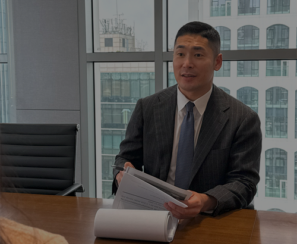
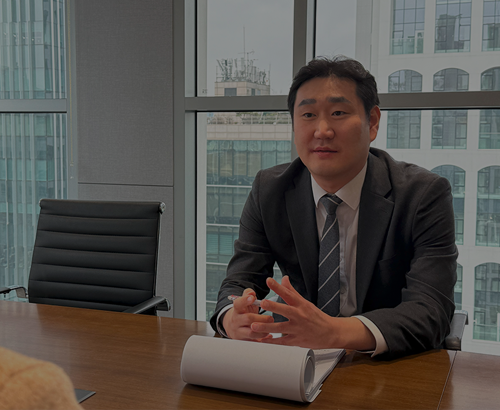

6대 센터 운영으로 철저한 변호 제공
에이앤랩 성범죄 그룹은, 성범죄 사건을 효과적으로 대응하기 위해 6대 전문 센터를 운영하고 있습니다.
각 센터는 성범죄 사건의 특성을 고려하여, 증거 분석부터 법률 전략 수립·합의 진행·징계 대응·긴급 법률 지원까지 전 과정에서 최적의 법률 서비스를 제공합니다.
-
법무법인 에이앤랩 성범죄 그룹
‘당신의 변호’는 다릅니다.
-
✓ 체계적인 6대 센터 운영으로 사건 별 맞춤형 변호 전략 제공
✓ 삭제된 증거 복구 및 정밀 분석을 통해 유리한 증거 확보
✓ 법률적 논리를 활용한 기소유예·감형·무죄 판결 가능성 극대화
✓ 공무원·전문직·대기업 종사자의 직장 내 징계 대응까지 종합 지원
✓ 긴급 대응 시스템을 통해 24시간 신속한 법률 지원
성범죄 혐의로 인해 불안하고 두려우신가요?
불안하고 두려우신가요?
법률적 조력을 받아야 불리한 상황을 막을 수 있습니다.
-
삭제된 문자·카카오톡·SNS 대화 복구 및 객관적 증거 확보
1. 증거분석센터
디지털 포렌식 기술을 활용한 증거 복구 및 분석
성범죄 사건에서 객관적인 증거 확보는 피의자의 방어권을 보호하는 핵심 요소입니다.
에이앤랩은 디지털 포렌식 기술을 활용하여 삭제된 데이터를 복구하고, 물리적 증거를 철저히 분석합니다.·삭제된 문자, 카카오톡, SNS 대화, 이메일 등 복원 및 분석 ·CCTV·통화기록·위치 데이터(GPS) 분석을 통해 알리바이 입증 ·DNA 감정, 지문 분석 등 과학적 증거 확보를 통한 무죄 주장 강화 ·경찰 및 검찰이 제시한 증거의 신뢰성을 검토하고 반박 자료 준비
증거분석센터
센터장 박현식 대표변호사 -
사실관계조사센터
센터장 유선경 대표변호사모순된 진술을 찾아내고 피의자의 입장을 논리적으로 정리2. 사실관계조사센터
피해자와 피의자의 진술 비교 및 신빙성 분석
성범죄 사건에서 피해자의 진술은 가장 중요한 증거로 작용할 수 있습니다.
하지만, 피해자의 진술이 일관되지 않거나 모순되는 경우, 그 신빙성을 문제 삼아 방어 전략을 강화할 수 있습니다.·경찰 조사 → 검찰 조사 → 법정 진술 변화를 분석하여 피해자의 신빙성 검토 ·피해자의 기억 오류, 과장 진술, 거짓 진술 가능성을 조사하여 방어 논리 마련 ·피해자와 피의자의 진술을 대조하여 논리적 모순이 있는 부분을 분석 ·피의자의 입장을 체계적으로 정리하여 수사기관 및 법정에서 신뢰성 강화 -
기소유예·감형·무죄 판결 가능성을 극대화하는 법률 대응
3. 법리분석센터
성공사례 및 판례 분석을 통한 맞춤형 변호 전략 수립
성범죄 사건은 법률적 해석이 복잡하며, 각 사건마다 최적의 법리적 접근이 필요합니다.
에이앤랩 법리분석센터는 기존 판례 및 성공 사례를 분석하여 피의자가 가장 유리한 법률 전략을 마련합니다.·유사 사건에서 무죄·기소유예·감형이 이루어진 사례를 빅데이터화하여 분석 ·검찰의 기소 기준 및 법원의 판결 경향을 연구하여 사건별 맞춤형 대응 전략 마련 ·경찰·검찰 수사 단계에서 변호인의견서를 제출하여 수사 방향을 유리하게 조정 ·기소 이후에도 무죄 판결을 받을 가능성을 극대화하는 법리적 논거 구성
법리분석센터
센터장 정지훈 대표변호사 -
합의전담센터
센터장 김동우 대표변호사처벌불원서 확보 및 감형을 위한 전략적 합의 진행4. 합의전담센터
피해자와의 원만한 합의 및 감형 전략
성범죄 사건에서 피해자와의 합의 여부는 기소유예, 감형 여부에 큰 영향을 미칠 수 있습니다.
하지만 합의 과정에서 2차 가해가 발생하지 않도록 신중한 접근이 필수적입니다.·전문적인 협상 전략을 활용하여 피해자와 원만한 합의 도출 ·피해자의 처벌불원의사(처벌불원서)를 확보하여 법원 및 검찰에 제출 ·합의가 감형에 반영될 수 있도록 변호 전략을 수립하여 재판부에 제출 ·합의가 어려운 경우, 피해자의 진술 신빙성을 다투는 방향으로 전략 수정 -
성범죄 사건으로 인한 직장 내 징계·해임·면직 대응 전략 수립
5. 공무원·전문직·대기업 징계 대응센터
공무원·대기업 징계 및 전문직 자격 상실 대응
성범죄 사건으로 수사를 받게 되면 공무원·전문직(의사·회계사·변호사 등)·대기업 종사자는 자격 박탈 및 징계를 받을 위험이 매우 높습니다.
에이앤랩은 법률적 대응뿐만 아니라, 징계 절차 방어 및 자격 유지까지 종합적인 보호 전략을 제공합니다.·공무원·교사·군인·대기업 임원 등 전문직 종사자의 징계 대응 전략 수립 ·경찰 수사 단계에서 무혐의 입증하여 징계 절차 자체를 차단하는 전략 적용 ·징계위원회 출석 및 의견서 제출을 통해 해임·정직 등의 중징계 방어 ·기업 내 윤리위원회·감사위원회 대응 및 노동법적 접근을 통한 직장 내 보호 전략 마련 ·사건이 무죄로 종결될 경우, 부당 징계·해고에 대한 법적 대응 및 복직 절차 지원공무원·전문직
센터장 정지훈,유선경 변호사
징계대응센터 -
긴급대응센터
조건명,박현식 변호사 긴급 현장 대응24시간 신속 대응으로 피의자의 권리를 보호6. 긴급대응센터
체포·압수수색·경찰 조사 등 긴급 상황 대응
성범죄 사건은 갑작스럽게 체포되거나, 경찰 조사 요청을 받을 가능성이 높은 사건입니다.
따라서 빠른 초기 대응이 불리한 상황을 방지하는 핵심 요소가 됩니다.·경찰서, 검찰 조사 시 변호사가 즉시 동행하여 법적 보호 제공 ·압수수색 영장 집행 시 불법적 절차 여부 감시 및 변호인의 이의제기 ·체포 및 구속 가능성이 있는 사건에서 즉각적인 구속 방어 전략 마련 ·긴급 체포된 경우, 즉시 변호인이 접견하여 초동 대응 지원 ·24시간 법률 상담 및 긴급 변호 서비스 제공